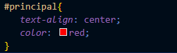
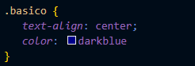

Psicologia das cores
Esse foi o tema da primeira aula do módulo 02 de HTML5 e CSS3
Nosso professor falou sobre a importancia da cores para o nosso site e o que pode trazer para o cliente.
Represetando cores com CSS3
As representações podem ser feitas das seguintes maneiras:
- Por códigos Hexadecimais
- Em RGB
- E por HSL (Hue, Sturation, Luminosity)
Veja como ficou o exercício sobre as representações:
Exercício da Aula 02Harmonia e paleta das cores
Aqui aprendemos bastante sobre cores, suas combinações e a importancia da harmonia das cores em nosso site.
Nosso professor mostrou alguns sites que podem nos ajudar na paleta de cores do nosso site.
Adobe Color Paletton CoolorsCapturando cores
Na aula 05 aprendemos a como capturar cores utilizando uma extensão do google chamada Colorzilla.
Como criar degradê com CSS3
Aprendemos a como criar um site com degradê na aula 06 do capítulo 13
Veja o exercício:
Exercício da Aula 06Capítulo 13 Aula 07 – Criando um exemplo real
Praticamos e fizemos o exercício:
Exercício da Aula 07Capítulo 14 - Fontes
No capítulo 14 aprendemos sobre fontes e aqui tem alguns exercícios que fizemos:
Peso, estilo e shorthand font Usando Google Fonts Usando fontes externas baixadas Alinhamento de textos com CSS
Capítulo 15 - Usando "id" e "class"
Foi um capítulo curto, mas necessário. Na primeira aula a gente aprendeu a como deixar um titulo diferente dos outros utilizando "id", veja o exercício:
Na segunda aula a gente aprendeu da diferença do "id" para "class"
-
id: Utilizamos para personalizar apenas um item:

-
class: Utilizamos para personalizar mais de um item

-
na class você consegue usar mais outra class
ex.: <class="basico destaque"> ( basico sendo uma class e destaque sendo outra)
- e também dá pra utilizar id + class, mas o id, as vezes, sobrepõe as configurações de class.
-
na class você consegue usar mais outra class
Na terceira aula a gente aprendeu sobre Pseudo-classes em CSS. Pelo o que eu entedi, pseudo-classes está relacionado ao estado da classes, permite que você estilize uma parte específica do elemento selecionado. Veja a aula para entender melhor:
Exercícios da aula:
Primeiro exercício Segundo exercício
Na quarta aula a gente aprendeu sobre o Pseudo-elementos em CSS e algumas funções importantes. Veja o video completo da aula:
Capítulo 16 - Modelo de Caixas, Grouping Tags e Sombras
Um capítulo onde o professor explica sobre os modelos de caixas
Em CSS, o termo "modelo de caixa" é usado quando se fala sobre design e layout de sites.
O modelo de caixa CSS é essencialmente uma caixa que envolve todos os elementos HTML.
Cada caixa é composta por quatro partes: conteúdo, preenchimento, bordas e margens.
A imagem abaixo ilustra o modelo de caixa CSS:

Exercício de modelo de caixa box-level
Grouping Tags
Pelo o que eu entendi só a aula de Grouping Tags, utilizamos para que o codigo fique mais organizado.
De maneira resumida, Grouping Tags:
-
A tag <header> seria o -> cabeçalho
-
A tag <main> seria o -> conteudo principal
-
E a tag <footer> seria o -> rodape
Sombras
Recomendo ver a video aula de como fazer sombra, nosso professor ensinou como colocar sombra de maneira simples:
Aqui está o exercício da aula Grouping Tags e Sombras:
Grouping Tags/SombrasCapítulo 17 – Criando um projeto a partir do zero
Nesse capítulo colocamos tudo o que aprendemos durante o curso em prática para criar um site, esse foi o resultado: